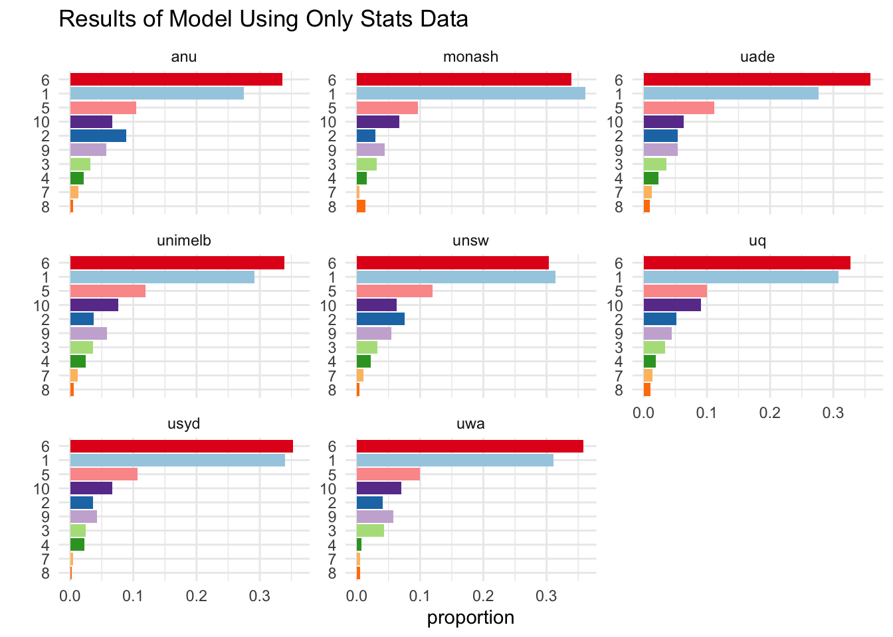
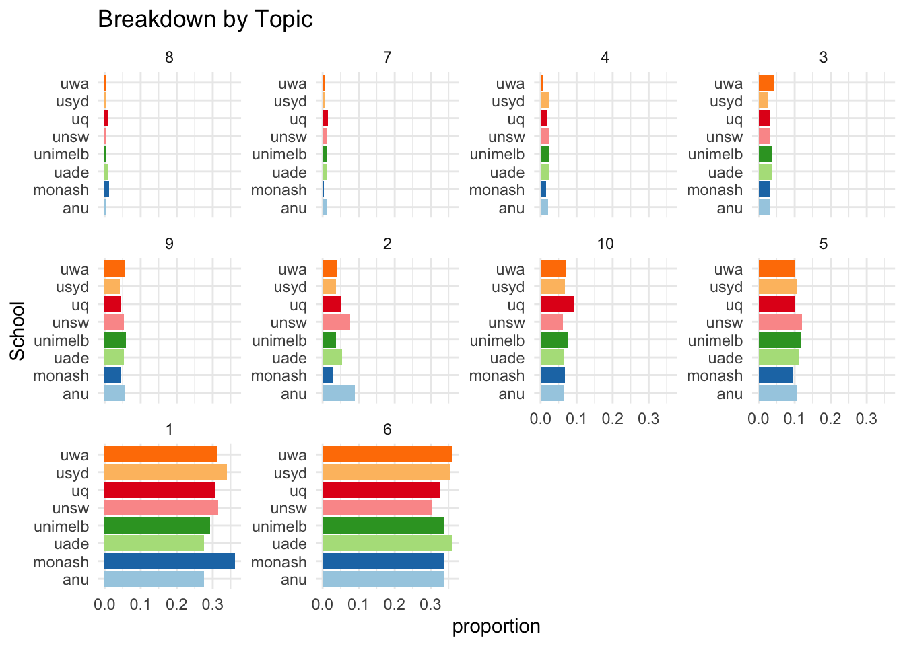

Apply the Selected Model to Collected University Data
Before applying the fitted LDA model to our university data set, words from unit overview and learning outcomes are stemmed using the SnowballC package, so that noises like plurals and part of speech are removed. The stemmed words are then assigned to the corresponding topic with the highest beta score, as explained in Section ?@sec-model. Instead of counting the appearance of words, the new counts generated are based on topics.
Similar with the university breakdown in ?@sec-unit-bigram, to make more objective comparisons, counts are converted to proportions due to different number of units scraped for the eight universities. Figure 1 suggests that Topics 1 and 6 are obviously the dominating topics in Master of data science at all Go8 universities, whereas Topics 2, 5, 9, 10 together also occupies a relatively large proportion.

The top 30 words based on probabilities for each of the ten topics are provided below, colours of the columns are aligned with Figure 1. Topic 1 contains words like statist (statistics), data, popul (population), system, bias, experiment, and we can see data, algorithm, analysi (analysis), model, cluster, comput (computation, computer, computational), function, spatial in topic 6, it is a reasonable interpretation that these two topics are both associated with computational aspects.
| Topic 1 | Topic 2 | Topic 3 | Topic 4 | Topic 5 | Topic 6 | Topic 7 | Topic 8 | Topic 9 | Topic 10 |
|---|---|---|---|---|---|---|---|---|---|
| studi | model | sampl | theta | probabl | data | distribut | x_ | test | process |
| use | variabl | estim | function | one | use | frac | frac | statist | time |
| statist | regress | mean | probabl | number | algorithm | alpha | left | hypothesi | point |
| research | estim | valu | x_x | theori | analysi | mu | right | valu | stochast |
| data | beta | distribut | distribut | bayesian | can | beta | sum | two | state |
| design | linear | varianc | variabl | event | method | function | operatornam | number | function |
| can | use | statist | random | can | model | gamma | sigma | use | can |
| effect | y_ | use | x_ | prior | set | right | y_ | correl | random |
| popul | squar | standard | random_variabl | infer | cluster | left | cdot | rank | markov |
| may | can | popul | mathcal | use | comput | normal | operatornam_e | measur | space |
| control | depend | deviat | p_x | exampl | point | lambda | matrix | differ | system |
| experi | data | data | mid | random | function | paramet | xi | signific | textstyl |
| analysi | valu | error | likelihood | given | learn | sigma | e | posit | use |
| also | error | interv | f_x | statist | also | nu | mu | one | signal |
| differ | effect | can | valu | problem | base | sqrt | hat | score | measur |
| measur | independ | median | f_ | valu | distanc | normal_distribut | end | null | t_t |
| group | fit | measur | measur | decis | problem | log | begin | ratio | one |
| exampl | paramet | normal | leq | expect | one | ln | align | group | number |
| treatment | observ | bar | log | two | factor | probabl | covari | can | lambda |
| result | analysi | size | set | observ | map | sim | var | null_hypothesi | equat |
| time | least | one | x_y | case | network | left_frac | varianc | coeffici | also |
| includ | function | standard_deviat | can | model | matrix | moment | c_ | negat | set |
| rate | seri | random | xn | law | applic | cumul | xy | result | poisson |
| level | equat | exampl | condit | possibl | compon | densiti | vector | true | call |
| individu | predict | confid | converg | outcom | similar | pi | x_x | type | theori |
| system | statist | weight | paramet | rule | two | variabl | n_ | item | frequenc |
| bias | least_squar | observ | mathbb | onli | optim | kappa | text | data | mathemat |
| experiment | one | number | space | also | techniqu | case | a_ | observ | continu |
| factor | term | squar | entropi | bay | number | exponenti | n_n | exampl | theorem |
| method | independ_variabl | differ | pr | first | spatial | random | w_ | fals | t_ |
In addition, words under Topics 2,5,9 and 10 are model, regression, estim (estimate, estimation), linear, least_squar (least_square), probabl (probability), bayesian, prior, infer, test, statist (statistics), hypothesi (hypothesis), correl (correlation), null, null_hypothesi (null_hypothesis), poisson, mathemat (mathematics, mathematical), most of them are related to math and statistics, and also more on the computational side of them, such as hypothesis testing and probability.
The results above further proves the earlier findings discussed in ?@sec-unit-code and ?@sec-unit-bigram: Master of Data Science degrees offered at Go8 universities tend to be mainly IT based, the major components are computational as well as statistical/mathematical aspects.

Figure 3 demonstrates a breakdown by topics instead of universities, it is clear that compares with the results based on only faculty in ?@sec-unit-code, the differences between Go8 are not as much here. The proportions occupied by the eight universities under each topic are fairly similar to each other, indicating the subjective choice made regarding the grouping method in ?@sec-unit-code might have provided a slightly misleading information, but it would require further explorations to confirm whether it is truly the case.